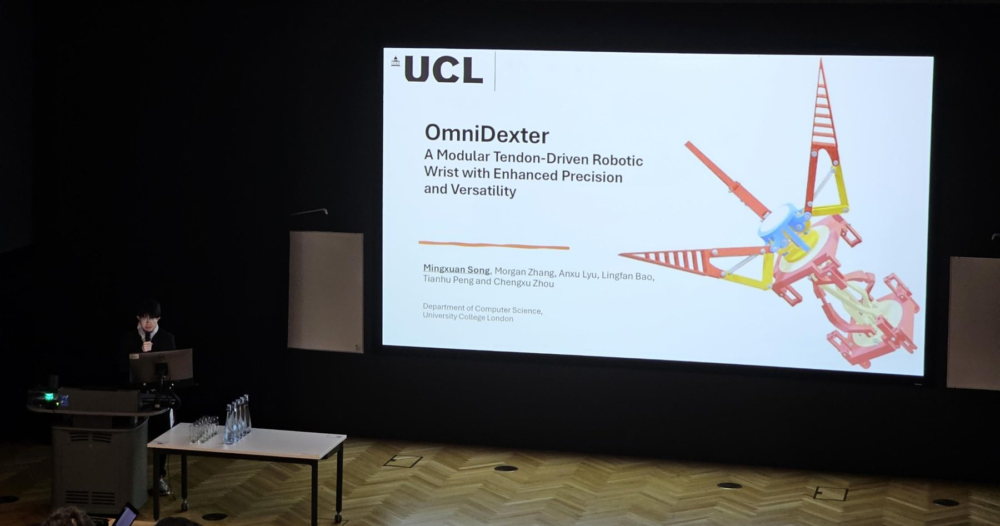
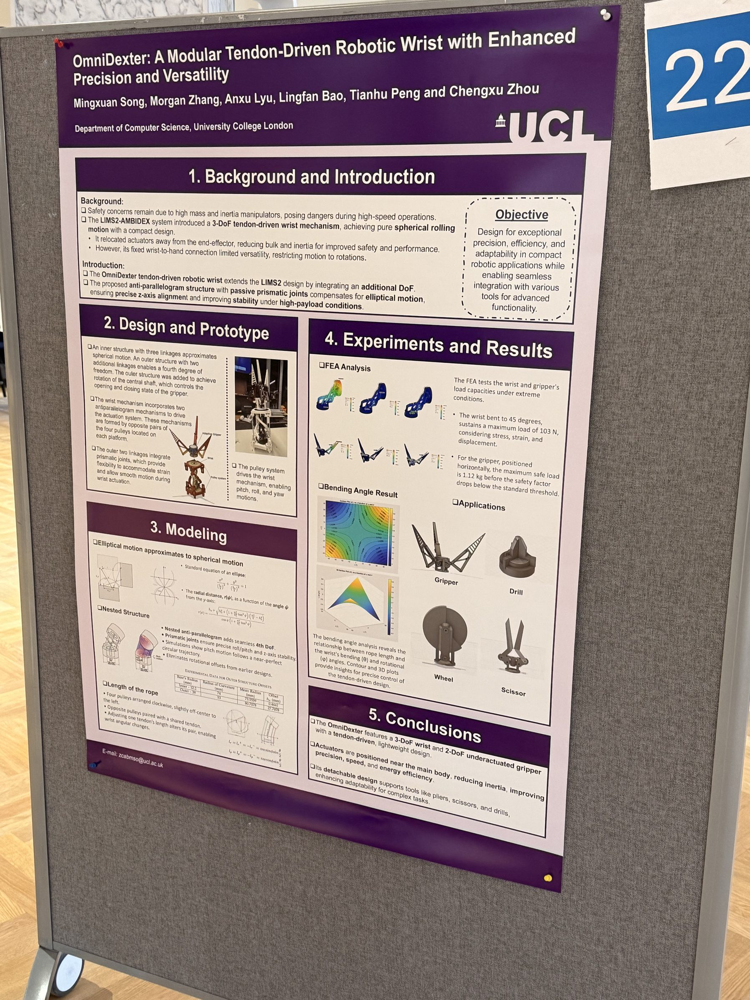

OmniDexter – Tendon‑driven Wrist and Gripper
A single-actuator, concentric-layer tendon-driven wrist with an underactuated gripper — continuous roll, pitch/yaw and grasping with minimal actuation. Presented at the UK 6th Robotic Manipulation Workshop.
Developed OmniDexter, a modular tendon‑driven robotic wrist and underactuated gripper with enhanced precision and versatility. The design consists of concentric layers: the innermost layer employs worm gears to actuate a 2‑DOF gripper, the middle layer provides continuous 360° rotation, and the outer layer uses an antiparallel four‑pulley linkage to achieve spherical motion. A single motor drives the tendons through the layers, delivering dexterity while keeping the mechanism compact.
Highlights
- 3 DOF wrist + 2 DOF underactuated gripper, 5 DOF total — driven by a single motor through tendon routing.
- Concentric‑layer architecture: inner worm‑gear gripper, middle 360° continuous rotation, outer four‑pulley antiparallel linkage for spherical pitch / yaw.
- Designed and built end‑to‑end — CAD, fabrication, assembly and testing — within a six‑week sprint.
- Showcased at the UK 6th Robotic Manipulation Workshop in Jan 2025.
Skills & Technologies
- Tendon‑driven Mechanism
- Underactuated Design
- Mechanical Design (Fusion 360)
- Mechatronics
- Robotic Manipulation
Gallery

